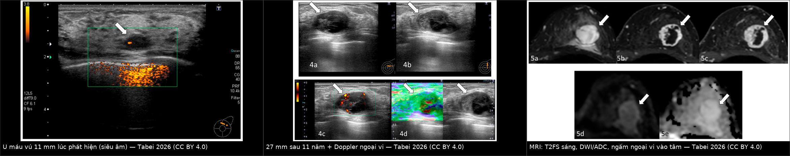
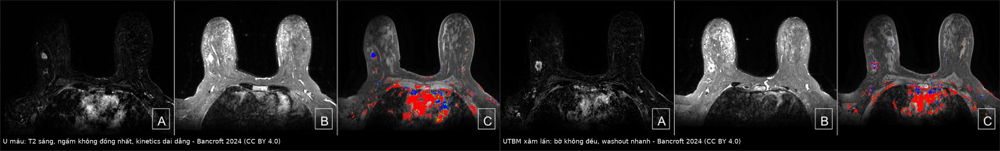
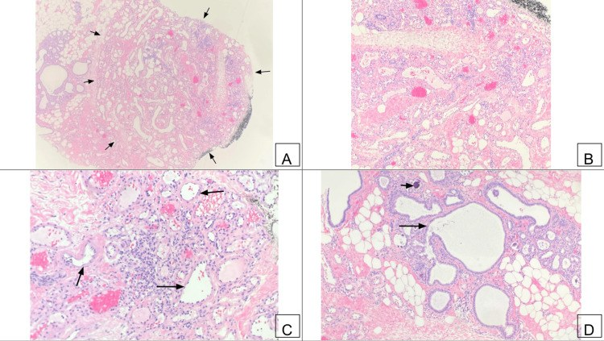
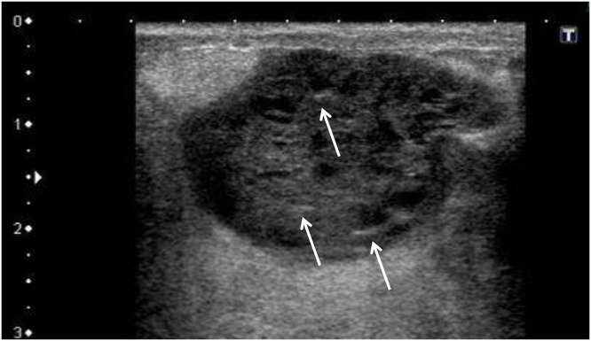
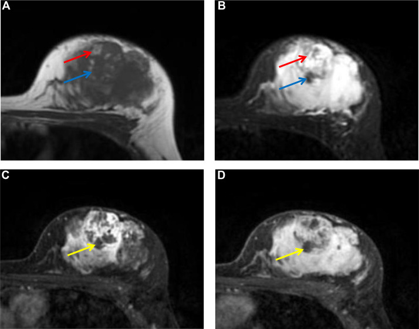
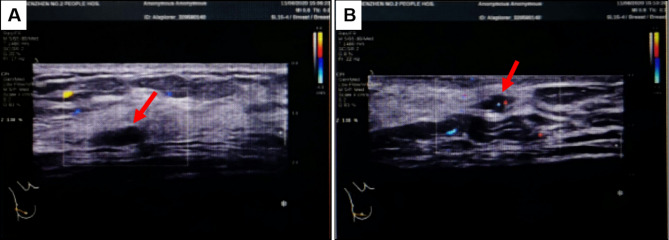
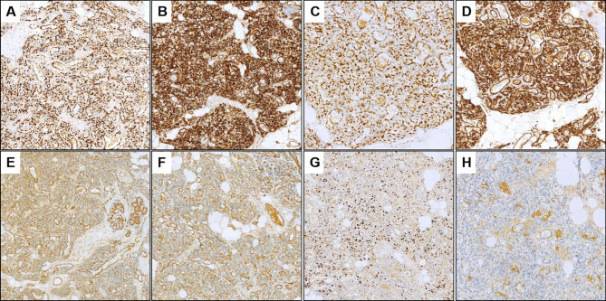

1602 — Hemangioma & tổn thương mạch lành tính của vú vs angiosarcoma / Benign vascular lesions of the breast vs angiosarcoma
Tags: pattern:u-mach-lanh-tinh pattern:khoi-vu pattern:u-mach-ac-tinh pattern:vu-sau-dieu-tri vung:vu score:BI-RADS protocol:MRI-vu protocol:sinh-thiet-loi incidentaloma:hemangioma-vu
Mức chắc chắn (certainty): tổng hợp y văn (literature synthesis) — nhóm tự biên từ y văn mở (Europe PMC/PMC: Reports 2026, Cureus 2024, Radiology Case Reports 2026, Diagnostic Pathology 2025) + trích số từ bài không mở toàn văn (J Breast Imaging 2024, AJR 2008, Histopathology 2017 & 2020, Jpn J Radiol 2025); có ca nguyên văn đọc trực tiếp từ bài gốc. Ảnh minh họa CC BY 4.0 (được ghép) và CC BY-NC-ND 4.0 (giữ nguyên bản).
1. Tổng quan — vì sao một khối "u máu" lại là câu hỏi ung thư + cơ chế hình ảnh
- Định nghĩa: hemangioma vú là u mạch lành tính tạo bởi các kênh mạch máu trưởng thành, phân loại theo kích thước lòng mạch (capillary: mao mạch; cavernous: xoang lớn; venous; perilobular: quanh tiểu thùy) — khác biệt mô học không đổi xử trí (PMC11079714). Đối cực ác tính là angiosarcoma (u nội mô mạch), gồm nguyên phát (trong nhu mô, thường nữ trẻ) và thứ phát (sau xạ — RAAS, hoặc trên phù bạch mạch mạn — hội chứng Stewart–Treves).
- Vì sao phải học kỹ: hai bên trùng hình ảnh ở nhiều điểm (đều là khối mạch, đều có thể T2 sáng, đều ngấm thuốc) nhưng hậu quả trái ngược: hemangioma không cần mổ nếu giải phẫu bệnh–hình ảnh khớp, còn angiosarcoma tử vong cao và cần cắt rộng sớm. Sai một bên = mổ oan hoặc bỏ sót u ác.
- Ngưỡng định lượng bắt buộc:
- Tần suất hemangioma: 0,4% toàn bộ u vú trên lâm sàng, nhưng tới 11% trong loạt tử thiết; chỉ 0,15% (15/~10.000) kết quả giải phẫu bệnh phẫu thuật (PMC12821452; J Breast Imaging 2024, PMID 38557759).
- Kích thước: đa số < 2,5 cm; tuổi gặp 1,5–82 tuổi; vị trí thường nông — dưới da/trước mạc tuyến (anterior mammary fascia), hiếm khi trong cơ ngực/thành ngực (J Breast Imaging 2024).
- Angiosarcoma vú: 0,04% ung thư vú (PMC12666011) — tức ~1/100 so với hemangioma trong cùng vùng.
- Dấu ấn mô bệnh: MYC khuếch đại/quá biểu hiện ~90% angiosarcoma THỨ PHÁT (sau xạ) nhưng hiếm ở angiosarcoma nguyên phát (PMC12144682) → MYC âm KHÔNG loại trừ angiosarcoma nguyên phát, và MYC dương chốt RAAS.
- SMA (smooth muscle actin): dương 96% (22/23) tổn thương mạch lành vs âm 80% (12/15) angiosarcoma — hữu ích khi hình thái chồng lấp (PMC12144682).
- Nguy cơ sau xạ: tổn thương mạch sau xạ gồm BLAP (benign lymphangiomatous papules), AVL (atypical vascular lesion) và RAAS; 74 ca theo dõi dài: toàn bộ BLAP và AVL còn sống, không bệnh (Histopathology 2020, PMID 32043616) — tức AVL hiếm khi tiến triển, nhưng vẫn phải theo dõi.
- Tiên lượng RAAS theo độ mô học: sống 5 năm 85,7% (grade 1) / 83,3% (grade 2) / 40,4% (grade 3) (Histopathology 2020).
- TẠI SAO hình ảnh trông như vậy (vật lý + mô bệnh):
- T2 rất sáng: các hồ máu chảy chậm/xoang tĩnh mạch chứa huyết tương và hồng cầu → thời gian T2 dài. Vì vậy hemangioma T2 tăng tín hiệu mạnh, đồng nhất hoặc có vách; nhưng T2 sáng KHÔNG đặc hiệu — ung thư nhầy (mucinous), nang, u myxoid, phù/seroma cũng sáng.
- T1 iso–giảm: máu tĩnh trong lòng mạch không phải mỡ → không sáng như mỡ; chỉ sáng khi có huyết khối/máu cũ (angiosarcoma thường có máu ở nhiều giai đoạn → T1 hỗn hợp sáng–tối, như ca PMC12666011).
- Ngấm thuốc: hemangioma ngấm theo huyết động lòng mạch — có thể ngấm mạnh, sớm (capillary) hoặc kiểu ngoại vi → trung tâm (centripetal) như hemangioma gan (PMC12821452); angiosarcoma ngấm do mô u tăng sinh mạch + shunt, thường không đồng nhất, washout ở độ ác cao.
- Doppler: hemangioma thường ít mạch/không mạch (dòng chảy rất chậm dưới ngưỡng Doppler), còn angiosarcoma giàu mạch — đây là điểm phân biệt định lượng quan trọng (J Breast Imaging 2024: angiosarcoma hay > 2 cm, giàu mạch Doppler, bờ không đều, xâm lấn).
- Vôi hóa: phlebolith (huyết khối vôi hóa trong lòng mạch) tròn, bờ rõ, có thể thấy trên nhũ ảnh — gợi ý lành nhưng không đủ loại trừ.
- Vì sao hemangioma có thể to dần mà vẫn lành: tăng kích thước có thể do xơ hóa, huyết khối, tổ chức hóa sau xuất huyết chứ không phải tăng sinh tế bào (ca 11 mm → 27 mm trong 11 năm, PMC12821452) → "to lên" một mình không đồng nghĩa ác tính, nhưng buộc phải đánh giá lại.
2. Mẫu hình (pattern) + chẩn đoán phân biệt theo bối cảnh (Gamut)
- Khuôn 1 — Khối oval, bờ rõ, NÔNG (dưới da/trước mạc tuyến), Doppler ít mạch. Gamut: hemangioma vs fibroadenoma vs nang phức tạp vs lymph node trong vú vs u mỡ. Chốt: T2 rất sáng + ít mạch + vị trí nông + ổn định → hemangioma; vẫn cần mô học nếu không điển hình.
- Khuôn 2 — Khối trong nhu mô, bờ không đều, lớn nhanh, giàu mạch, da đỏ/tím. Gamut: angiosarcoma nguyên phát vs carcinoma thể viêm vs áp-xe/viêm mô tế bào vs hematoma tổ chức hóa. Chốt: > 2 cm + bờ không đều + mạch nhiều + tăng nhanh → sinh thiết lõi ngay, không theo dõi.
- Khuôn 3 — Sẩn/mảng tím ở da vú ĐÃ XẠ. Gamut: RAAS vs AVL/BLAP vs viêm da xạ vs tái phát carcinoma da. Chốt: thời gian ≥ 3 năm + không tan + tiến triển → sinh thiết sâu + MYC (bài 523).
- Khuôn 4 — Khối mạch TÌNH CỜ trên MRI, không thấy trên nhũ ảnh/siêu âm. Gamut: hemangioma vs DCIS/ung thư nhầy ẩn vs tổn thương myxoid. Chốt: T2 sáng + ADC cao (không hạn chế khuếch tán thật) + bờ rõ nghiêng lành; vẫn cần sinh thiết có định hướng MRI vì nhũ ảnh âm không loại trừ (ca PMC11079714).
- Khuôn 5 — Chi trên phù bạch mạch mạn (sau ALND/xạ), xuất hiện nốt tím. Gamut: Stewart–Treves (angiosarcoma trên phù bạch mạch) vs viêm mô tế bào tái diễn vs huyết khối tĩnh mạch vs tái phát tại chỗ. Chốt: nốt/tím mới trên chi phù + không đáp ứng kháng sinh → sinh thiết (bài 593).
- Khuôn 6 — Sinh thiết lõi trả "hemangioma" nhưng hình ảnh/lâm sàng KHÔNG khớp. Gamut: angiosarcoma độ thấp giả u máu vs APH (atypical perilobular hemangioma) vs hemangioma thật. Chốt: bờ không rõ + xâm lấn + tế bào đầu vú (hobnail) + phân bào → cần hội chẩn giải phẫu bệnh, SMA/MYC, cân nhắc cắt trọn.
- Gợi nhớ "SLOW" (lành) vs "FAST" (ác):
- Superficial (nông, trước mạc tuyến) — Lobulated/oval, bờ rõ — Old (ổn định, lớn chậm) — Weak Doppler (ít mạch).
- Fast growth (lớn nhanh) — Atypical/irregular margin — Size > 2 cm + không đồng nhất — Thriving vessels (giàu mạch, có mạch xuyên/dẫn lưu lớn).
3. Bảng so sánh phân biệt (ma trận đối chiếu)
| Thực thể (entity) | Hình ảnh điển hình (nhũ ảnh / siêu âm / MRI) | Chốt vào (rule-in) | Chốt loại (rule-out) | Gợi ý xác nhận |
|---|---|---|---|---|
| Hemangioma vú (capillary/cavernous/venous) | Khối oval/lobulated, bờ rõ hoặc microlobulated, nông; Doppler ít/không mạch; MRI T2FS rất sáng, T1 iso–giảm, ngấm ngoại vi → tâm hoặc không đồng nhất, ADC cao | Nông + bờ rõ + Doppler ít mạch + T2 rất sáng + ADC cao + ổn định | Bờ không đều + giàu mạch + xâm lấn mô mỡ + washout mạnh → không phải hemangioma | Core 14G; nếu mô học lành không atypia + khớp hình ảnh → không cần cắt |
| APH (atypical perilobular hemangioma) | Thường ≤ 2 mm, khó thấy; ca lớn 12 mm có bờ không rõ từng vùng, xâm lấn quanh tiểu thùy | Tổn thương mạch quanh tiểu thùy + tế bào atypia nhẹ/hobnail + SMA (+) | MYC (+) + hoại tử + xâm lấn rộng → angiosarcoma | Hội chẩn mô bệnh; SMA, MYC, Ki-67; cắt trọn nếu bờ không rõ |
| Angiosarcoma NGUYÊN PHÁT | Khối > 2 cm, bờ không đều, không đồng nhất; giàu mạch Doppler; MRI T1/T2 hỗn hợp do máu nhiều giai đoạn, ngấm mạnh; có thể da đỏ/tím, đau | Nữ trẻ + khối nhu mô lớn nhanh + T2 hỗn hợp + xuất huyết trong u | T2 rất sáng đồng nhất + bờ rõ + nông + ít mạch → nghiêng lành | Sinh thiết lõi/cắt trọn; MYC thường ÂM (không dùng để loại trừ) |
| RAAS / Stewart–Treves (thứ phát) | Da–dưới da, nhiều ổ (59,3%), bờ không rõ (92,9%); T1 trung gian (84,2%), T2 trung gian/hỗn hợp; ADC thấp 0,77–0,96 × 10⁻³ mm²/s | Vùng xạ cũ ≥ 3 năm HOẶC chi phù bạch mạch mạn + nốt tím mới + MYC (+) | MYC âm + mô học không atypia + ổn định → AVL/BLAP, không phải RAAS | Sinh thiết sâu + MYC IHC/FISH; mapping trước cắt rộng |
| AVL / BLAP sau xạ | Sẩn da nhỏ trong trường xạ, có thể lan ngoài trường xạ; hình thái giống RAAS nhưng nhẹ | Mô học mạch không điển hình nhẹ + MYC ÂM + không hoại tử | MYC (+) hoặc xâm lấn sâu → RAAS | MYC bắt buộc; theo dõi sát, sinh thiết lại nếu tiến triển |
| Ung thư nhầy (mucinous carcinoma) | Bờ rõ/push, T2 rất sáng (nhầy), ngấm chậm tăng dần; typ hỗn hợp hạn chế khuếch tán mạnh hơn | T2 sáng + ngấm chậm + tuổi lớn | ADC rất cao + bờ rõ + nông + ít mạch không loại trừ nhầy → vẫn sinh thiết | Core; ER/PR; ADC thấp ở typ hỗn hợp |
| EPC (encapsulated papillary carcinoma) | Khối dạng nang + nhú thành ngấm, T2 sáng, vỏ/bao rõ, nhú ngấm sớm rồi washout | Nang có nhú thành + vỏ rõ | Đặc hoàn toàn, không nhú, không vỏ → ít nghĩ EPC | Core + mô bệnh; MRI giúp thấy nhú |
| Fibroadenoma / nang phức tạp | Oval, bờ rõ, đồng nhất, có vách; nang: không ngấm, T2 rất sáng, ADC rất cao | Đồng nhất + không ngấm (nang) hoặc ngấm đều (FA) | Ngấm đặc không đồng nhất + T2 sáng hỗn hợp → không phải FA/nang đơn thuần | Siêu âm ± core |
| Hoại tử mỡ / seroma sau mổ–xạ | Nang dầu, vôi hóa vỏ, lõi không ngấm, có thành phần mỡ; seroma: dịch, không ngấm, co nhỏ | Có mỡ + lõi không ngấm + bờ vôi hóa | Ngấm đặc lõi + lớn lên → không phải hoại tử mỡ | So phim cũ (bài 516) |

Trái → phải: siêu âm lúc phát hiện 11 mm, siêu âm sau 11 năm 27 mm với mạch ngoại vi trên Doppler, và MRI (T2FS sáng, DWI/ADC, ngấm từ ngoại vi vào trung tâm). Dù to gấp 2,5 lần, mô học vẫn là capillary hemangioma — lớn dần do xơ hóa/huyết khối, không phải chuyển dạng. Ảnh ghép letterbox, CC BY 4.0 (Tabei A et al., Reports 2026; PMC12821452).Dấu hiệu "chốt" và cạm bẫy của từng dấu hiệu
- T2 sáng là dấu hiệu của NƯỚC, không phải của lành: hemangioma, ung thư nhầy, nang, myxoid, phù, seroma đều T2 sáng → phải phối hợp bờ + vị trí + Doppler + ADC + động học.
- ADC cao giúp loại "hạn chế khuếch tán thật": hemangioma có DWI sáng nhưng ADC cao (T2 shine-through) — ca PMC12821452 ghi rõ DWI sáng + ADC cao; angiosarcoma (nhất là Stewart–Treves) có ADC thấp 0,77–0,96 × 10⁻³ mm²/s (Jpn J Radiol 2025, PMID 39907978).
- Doppler là "bộ lọc" rẻ tiền: hemangioma ít mạch vì dòng chảy chậm; giàu mạch + > 2 cm + bờ không đều là bộ ba nghi angiosarcoma (J Breast Imaging 2024).
- Vị trí nông là gợi ý mạnh: hemangioma thường trước mạc tuyến/trong da–dưới da; angiosarcoma nguyên phát trong nhu mô, RAAS/Stewart–Treves ở da–dưới da nhưng nhiều ổ và bờ không rõ.

Trái (3 ảnh): hemangioma 1,3 cm — T2 sáng, ngấm không đồng nhất, kinetics dai dẳng (persistent) kèm vài vùng washout. Phải (3 ảnh): UTBM xâm lấn 1,7 cm — bờ không đều, washout nhanh. Hai tổn thương cùng tồn tại trên một vú; nhũ ảnh không thấy hemangioma. Ảnh ghép letterbox, CC BY 4.0 (Bancroft A et al., Cureus 2024; PMC11079714).
H&E: các kênh mạch thành mỏng, bờ rõ, không atypia, không phân bào, nằm trong mô đệm gian tiểu thùy; kèm columnar cell change và vi vôi hóa (không liên quan u mạch). Nguồn: Bancroft A et al., Cureus 2024, Fig. 7, CC BY 4.0.4. Protocol chẩn đoán – xử trí + lưu đồ
- Bước 1 — Nhũ ảnh 2D/DBT: tìm khối oval/lobulated bờ rõ, phlebolith; nhũ ảnh có thể âm hoàn toàn (hemangioma nông, nhỏ) → nhũ ảnh âm không loại trừ.
- Bước 2 — Siêu âm + Doppler màu: đo 3 chiều (mm), mô tả bờ, vị trí nông/sâu, độ giàu mạch. Ít mạch = gợi ý lành; giàu mạch = cảnh báo nhưng không chốt (capillary hemangioma có thể ngấm mạnh trên MRI).
- Bước 3 — MRI vú (khi nhũ ảnh/siêu âm không kết luận, hoặc tổn thương chỉ thấy trên MRI): T2FS, DWI/ADC, DCE + kinetic. Đọc 4 thông số: (1) bờ, (2) tín hiệu T2, (3) ADC, (4) kiểu ngấm (centripetal/persistent vs washout).
- Bước 4 — Sinh thiết lõi 14G (core needle), KHÔNG dùng FNA: FNA không đủ cấu trúc mạch để phân biệt hemangioma/angiosarcoma. Lưu ý chảy máu: chèn ép đủ thời gian, xem xét ngừng kháng đông theo phác đồ; không tránh sinh thiết chỉ vì "nghi u máu".
- Bước 5 — Quyết định dựa trên mô học + khớp hình ảnh:
- Lành, không atypia, khớp hình ảnh → không cắt: 84 bệnh nhân (76 lành, 5 atypia, 3 angiosarcoma), 17 ca được cắt vì lành đều không nâng bậc, không tái phát/biến cố với theo dõi trung vị 39–40,6 tháng (Histopathology 2017, PMID 28644513).
- Có atypia, hoặc không khớp hình ảnh–mô học, hoặc mô học "giống hemangioma" nhưng lâm sàng đáng ngờ → cắt trọn/hội chẩn (angiosarcoma độ thấp có thể bị bỏ sót trên sinh thiết lõi).
- Sau xạ: mọi tổn thương mạch mới → sinh thiết + MYC; AVL/BLAP theo dõi, RAAS điều trị theo bài 523.
- Ngưỡng hành động (tóm tắt số): > 2 cm, giàu mạch Doppler, bờ không đều, xâm lấn, lớn nhanh, da đỏ/tím/loét, tiền sử xạ vú, phù bạch mạch mạn = không theo dõi đơn thuần.
- BI-RADS: khối bờ rõ điển hình có thể BI-RADS 3 (theo dõi ngắn hạn) nhưng không áp dụng máy móc cho tổn thương mạch trong vùng xạ; ca mơ hồ/không đồng nhất → BI-RADS 4 và sinh thiết (ca PMC11079714 và PMC12821452 đều BI-RADS 4 trước khi có mô học).
flowchart TD
A[Khối/tổn thương mạch nghi ngờ ở vú] --> B{Có tiền sử XẠ vú hoặc phù bạch mạch mạn?}
B -->|Có| C{Tổn thương ở DA hoặc nhiều ổ, bờ không rõ?}
C -->|Có| D[Sinh thiết SÂU + MYC IHC/FISH + mapping]
C -->|Không| E[Siêu âm + MRI: đánh giá bờ, tín hiệu, ADC]
B -->|Không| E
E --> F{Kích thước > 2 cm HOẶC giàu mạch Doppler HOẶC bờ không đều HOẶC xâm lấn?}
F -->|Có| G[Sinh thiết lõi 14G - KHÔNG theo dõi đơn thuần]
F -->|Không| H{MRI: T2 rất sáng + ADC cao + bờ rõ + nông?}
H -->|Có| I[Có thể theo dõi NGẮN HẠN - nhưng vẫn sinh thiết nếu không chắc]
H -->|Không| G
G --> J{Mô học: tổn thương mạch lành, KHÔNG atypia?}
J -->|Có| K{Khớp hình ảnh - lâm sàng?}
K -->|Có| L[KHÔNG cần cắt - theo dõi định kỳ]
K -->|Không| M[Cắt trọn hoặc hội chẩn mô bệnh]
J -->|Không, có atypia| M
M --> N{SMA dương mạnh + MYC âm + không xâm lấn?}
N -->|Có| O[Nghiêng APH/AVL lành - theo dõi sát]
N -->|Không| P[Nghi angiosarcoma - cắt rộng + điều trị theo bài 523]
D --> Q{MYC dương?}
Q -->|Có| P
Q -->|Không| O
5. Biến thể bình thường và cạm bẫy
- Cạm bẫy "T2 sáng = u máu lành": ung thư nhầy, nang, myxoid, phù/seroma đều T2 sáng; T2 sáng chỉ nói lên có nước. Phải đọc thêm bờ, vị trí, ADC, Doppler.
- Cạm bẫy "nhũ ảnh bình thường": hemangioma nông nhỏ và angiosarcoma ở da đều có thể không thấy trên nhũ ảnh → nhũ ảnh âm không loại trừ; ca PMC11079714 phát hiện hemangioma chỉ trên MRI.
- Cạm bẫy "ít mạch = lành": đúng xu hướng nhưng không tuyệt đối — capillary hemangioma có thể ngấm mạnh/sớm (PMC3440933); ngược lại angiosarcoma độ thấp có thể ít mạch.
- Cạm bẫy "to lên = ác": hemangioma 11 → 27 mm trong 11 năm vẫn lành (xơ hóa/huyết khối) — nhưng tăng nhanh, không đồng nhất, đau, da đổi màu thì phải sinh thiết lại.
- Cạm bẫy hai chiều trên sinh thiết lõi: (1) angiosarcoma độ thấp giả hemangioma → bỏ sót; (2) APH lành bị đọc thành angiosarcoma → mổ oan. Trong y văn, đa số (4/6) ca APH từng bị chẩn đoán nhầm là angiosarcoma, ca 12 mm bị 2 bệnh viện chẩn đoán sarcoma (PMC12144682). Cần hội chẩn + SMA/MYC/Ki-67, không dựa một tiêu chuẩn.
- Cạm bẫy "MYC âm = không phải angiosarcoma": MYC chỉ dương ở ~90% ca THỨ PHÁT; angiosarcoma nguyên phát thường MYC âm (ca PMC12666011: CD31+/CD34+, cMYC âm, vẫn là angiosarcoma) → MYC âm không loại trừ.
- Cạm bẫy "sinh thiết lành là xong": nếu khối vẫn lớn lên hoặc hình ảnh không khớp → sinh thiết lại/cắt trọn; đây là lý do các ca "hemangioma" có bờ không rõ/xâm lấn cần cắt.
- Cạm bẫy thai kỳ/cho con bú: lobular capillary hemangioma (giống u hạt sinh mủ) có thể mọc nhanh, chảy máu do hormone — đừng quy kết ung thư chỉ vì tốc độ; nhưng vẫn cần mô học nếu không điển hình.
- Cạm bẫy vị trí: hemangioma có thể nằm trong cơ ngực/thành ngực (như intramuscular hemangioma) → đừng nhầm với khối vú; ngược lại tổn thương "trong vú" có thể là hạch/da.
- Cạm bẫy sau xạ: AVL có thể lan ra ngoài trường xạ → "ngoài vùng xạ" không loại trừ tổn thương mạch sau xạ.
6. Tự lượng giá — Blind Quiz
Ca 1 — Nữ 50 tuổi, khối 11 mm phát hiện trên siêu âm, theo dõi 11 năm. Đọc ảnh theo trình tự.
- Hỏi: (1) khối to lên gấp mấy lần? (2) ba dấu hiệu nào trên MRI gợi ý tổn thương mạch lành? (3) có nên kết luận ác tính chỉ vì to lên?
Bấm để hiện đáp án (findings + chẩn đoán)
- Findings: 11 mm → 27 mm sau 11 năm (≈ 2,5 lần); siêu âm: oval, bờ rõ, mạch ngoại vi; MRI: T2FS rất sáng, DWI sáng + ADC cao, ngấm từ ngoại vi vào trung tâm, ngoại vi fast-plateau, trung tâm persistent.
- Chẩn đoán: capillary hemangioma (VAB xác nhận; BI-RADS 4B trước đó). Tăng kích thước do xơ hóa/huyết khối, không phải chuyển dạng ác.
- Bài học: ADC cao loại hạn chế khuếch tán thật; ngấm ngoại vi → tâm là dấu hiệu huyết động của u mạch lành.
- Nguồn ảnh: Tabei A et al., Reports 2026, Fig. 1, 4, 5, CC BY 4.0 (ảnh ghép letterbox).
Ca 2 — Nữ 49 tuổi, ung thư vú phải mới chẩn đoán; MRI staging thấy thêm một khối 1,3 cm. Đọc MRI.
- Hỏi: khối nào là ung thư, khối nào là hemangioma? Dấu hiệu nào không phân biệt được hai bên?
Bấm để hiện đáp án (findings + chẩn đoán)
- Findings: bên trái = hemangioma 1,3 cm, oval, bờ rõ, T2 sáng, ngấm không đồng nhất, persistent kinetics; bên phải = UTBM xâm lấn 1,7 cm, bờ không đều, washout nhanh. MIP cho thấy hai tổn thương cùng tồn tại.
- Chẩn đoán: hemangioma được xác nhận bằng sinh thiết lõi có định hướng MRI (BI-RADS 4), mô học khớp hình ảnh → không cần mổ riêng; hemangioma được lấy cùng bệnh phẩm cắt tuyến.
- Điểm cần nhớ: T2 sáng có ở CẢ HAI → không dùng T2 một mình; kinetics + bờ mới tách được. Lưu ý nguồn: chú thích Fig. 5 của bài gốc mô tả nhầm thành "irregular margins" (lặp từ Fig. 4), trong khi phần text ghi oval, circumscribed — đây là lỗi biên tập của nguồn, đã đối chiếu text.
- Nguồn ảnh: Bancroft A et al., Cureus 2024, Fig. 4 & 5, CC BY 4.0 (ảnh ghép letterbox).
Ca 3 — Nữ 37 tuổi, khối vú trái 10 cm, đau, da đỏ–đen; sinh thiết lõi ban đầu trả "tổn thương mạch không điển hình". Đọc siêu âm và MRI.


- Hỏi: dấu hiệu nào trên MRI nói "có máu ở nhiều giai đoạn"? Vì sao cMYC âm không loại trừ angiosarcoma?
Bấm để hiện đáp án (findings + chẩn đoán)
- Findings: siêu âm: khối 28 × 9 mm giảm hồi âm lẫn ổ tăng hồi âm, giàu mạch vừa; MRI: T1 sáng không đồng nhất có vách, T2 hỗn hợp sáng–tối, ổ T2 tối không ngấm (xơ/huyết khối cũ), ngấm mạnh ngoại vi + ngấm tiến triển thì muộn. Kích thước trên MRI (84 × 52 mm) lớn hơn siêu âm nhiều do hematoma lan rộng.
- Chẩn đoán: angiosarcoma nguyên phát, độ biệt hóa cao; IHC CD31+/CD34+, cMYC âm. MYC âm là bình thường ở thể nguyên phát — chỉ ~90% ca thứ phát dương tính.
- Xử trí: cắt tuyến bảo tồn núm + paclitaxel 12 chu kỳ, không tái phát 3 năm.
- Nguồn ảnh: Taniuchi T et al., Radiology Case Reports 2026, Fig. 1 & 2, CC BY-NC-ND 4.0 (giữ nguyên bản, không ghép).
Ca 4 — Nữ 47 tuổi, nốt 12 mm sát núm; hai bệnh viện chẩn đoán angiosarcoma. Đọc siêu âm và hóa mô miễn dịch.


- Hỏi: bộ IHC này ủng hộ lành hay ác? Tiêu chuẩn nào giúp phân biệt APH với angiosarcoma độ thấp?
Bấm để hiện đáp án (findings + chẩn đoán)
- Findings: siêu âm: nốt 10 × 5 × 4 mm, giảm hồi âm, cách núm ~4 mm; IHC: ERG+, CD34+, FLI-1+, CD31+ (dòng nội mô), SMA dương mạnh, D2-40 âm, Ki-67 thấp; mô học: các cụm mạch quanh tiểu thùy, kênh mạch không nối thông thật (non-anastomosing), tế bào hobnail và vài phân bào.
- Chẩn đoán: atypical perilobular hemangioma (APH) — lành; SMA dương là điểm tựa (dương 96% tổn thương lành, âm 80% angiosarcoma), cùng với không có nối thông mạch thật và kiến trúc quanh tiểu thùy còn nguyên.
- Bài học: APH thường ≤ 2 mm, ca này 12 mm nên rất dễ bị đọc thành angiosarcoma; 4/6 ca trong y văn từng bị chẩn đoán nhầm → cần hội chẩn, không mổ rộng vội.
- Nguồn ảnh: Wei Y et al., Diagnostic Pathology 2025, Fig. 1 & 3, CC BY-NC-ND 4.0 (giữ nguyên bản, không ghép).
Bài liên quan chéo
- 500 – Tổng quan Hệ Vú & Sản Phụ khoa
- 510 – BI-RADS vú: nhũ ảnh, siêu âm, MRI
- 516 – Hình ảnh vú sau điều trị: tái tạo, hoại tử mỡ, sẹo vs tái phát & BIA-ALCL
- 522 – Theo dõi sau điều trị ung thư vú: nhũ ảnh/DBT, siêu âm, MRI & CEM
- 523 – Sarcoma mạch do xạ ở vú (RAAS) & vết tím–bầm dai dẳng sau xạ
- 535 – U buồng trứng, phúc mạc, Krukenberg
- 376 – U phần mềm KHÔNG mỡ: schwannoma vs sarcoma myxoid
Ảnh
images/composite_hemangioma-11-nam.jpg,images/composite_hemangioma-vs-ung-thu-MRI.jpg,images/1602_hemangioma_HES-PMC11079714.jpg,images/1602_hemangioma_US_PMC12821452.jpg,images/1602_hemangioma_US-Doppler_PMC12821452.jpg,images/1602_hemangioma_MRI_PMC12821452.jpg,images/1602_hemangioma_MRI-PMC11079714.jpg,images/1602_ung-thu_MRI-PMC11079714.jpg,images/1602_angiosarcoma_US_PMC12666011.jpg,images/1602_angiosarcoma_MRI_PMC12666011.jpg,images/1602_APH_US_PMC12144682.jpg,images/1602_APH_IHC_PMC12144682.jpg. Nguồn + giấy phép từng ảnh trongimages/CREDITS.md.
Không dùng để chẩn đoán độc lập khi chưa có người hướng dẫn.